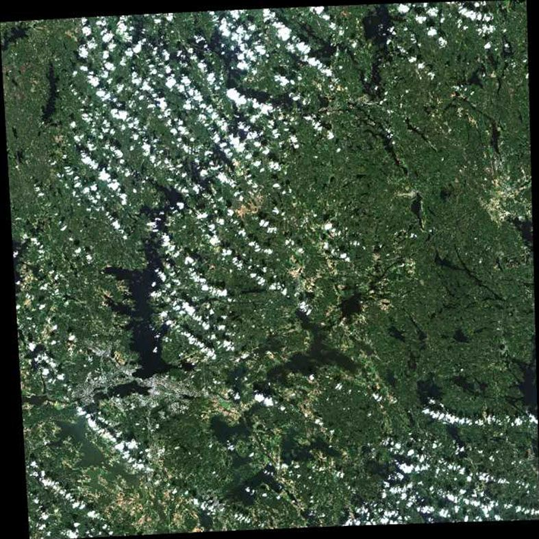

4 Remote sensing data
4.1 Summary
This week’s session was mainly on image corrections and enhancement techniques. These are akey steps in preparing satellite imagery for analysis. Raw satellite data often has issues due to the sensor’s position, the Earth’s surface, or the atmosphere. Here is a summary of some of the issues and how they’re typically corrected:
| Error | Effect | Correction |
|---|---|---|
| Geometric Distortion | Features misaligned or warped | Georeferencing / Orthorectification |
| Radiometric Distortion | Pixel brightness doesn’t match real reflectance | Radiometric Calibration |
| Atmospheric Effects | Haze/clouds distort pixel values | Atmospheric Correction (TOA → BOA) |
| Seamline Artifacts | Visible lines between image tiles | Seamline Editing / Feathering |
| Colour Mismatch | Inconsistent brightness/tones between images | Colour Balancing / Normalisation |
These corrections improve image consistency, making it possible for multi-temporal or multi-sensor analysis. This is particularly useful in urban studies where you might have to use different data types to achieve a task.
We also touched on important terms on the corrections workflow:
For Corrections & Calibration
| Term | What It Means |
|---|---|
| DN (Digital Number) | Raw pixel value straight from the satellite sensor |
| Radiance | The actual energy (brightness) measured by the sensor — calculated from DN |
| Reflectance | How much sunlight the surface reflects — helps identify materials |
| TOA Reflectance | What the satellite “sees” before atmospheric correction |
| BOA Reflectance | Reflectance after correcting for atmospheric effects — closer to surface truth |
| Radiometric Calibration | Adjusting DN values to reflect real-world energy/brightness |
This week, I focused on TOA vs BOA reflectance. Many satellite products (like Sentinel-2 Level-1C) come in TOA form, which includes interference from the atmosphere. But for detailed analysis—like vegetation health, land cover classification, or urban change—BOA reflectance is essential. It gives a clearer, more accurate picture of what’s actually happening on the ground by removing distortions from haze, clouds, or sunlight angles. Without this correction, analyses can misrepresent real surface conditions, leading to flawed decisions or models.
4.2 Application
For this week, I will look at papers exploring the relationship between TOA and BOA reflectance.
4.2.1 NDVI (BOA) vs NDVI (TOA) in Sentinel-2 Data
The first article is by Lauri(2019) who compares NDVI values derived from TOA and BOA reflectance using Sentinel-2 data. Figure 1 show the Sentinel-2 image of Tampere used in the study.

The finding of the study showed that NDVI calculated from BOA reflectance is consistently higher and more reliable than from TOA, as shown in figure 2. This makes sense because TOA includes atmospheric interference like haze and scattering, which can reduce apparent greenness.
So, for something like crop monitoring or tracking urban vegetation, relying on TOA reflectance could understate actual plant health, while BOA gives a sincerer picture. This goes to show how the atmospheric correction can impact the findings of the data.
4.2.2 Testing Atmospheric Correction Methods
The second paper by Nazeer et al. evaluated how well different correction methods convert TOA to BOA reflectance for PlanetScope, Sentinel-2, and Landsat-8 imagery. They proposed a new model called SREM, designed to work even without complex atmospheric data like AOD or ozone levels.
They validated their results using reference surface reflectance data (BOA) from a radiative transfer model (6SV) and AERONET station data. Their SREM method came out quite accurate across all three sensors and different land types as shown in figure 3.
This is especially useful for studies in places without ground monitoring stations (like Ghana), where full atmospheric inputs aren’t available. It shows you can still produce BOA-level outputs from TOA data using clever modelling.
4.2.3 Insights
Both articles made it clear that the shift from TOA to BOA isn’t optional if you want reliable, detailed land analysis. Even for something basic like NDVI, skipping that step can skew your results. And with better correction models like SREM, BOA is becoming more accessible—even in data-scarce areas.
4.3 Reflection
This week’s lecture was packed with information and technical terms in remote sensing. Honestly, it was a bit challenging trying to fully grasp all the terminologies used in the lecture.
I chose to focus on TOA and BOA reflectance because they connect to one of the trickiest issues in remote sensing: clouds. Just like when you’re in a plane and can see both clouds and the ground, satellites face the same challenge. As sunlight travels back to the satellite sensor, it gets partially blocked or scattered by particles in the atmosphere, like aerosols.
This is important because many satellite datasets are provided in TOA reflectance, which includes this interference. To get accurate information about the Earth’s surface, we need to correct it to BOA reflectance, which removes most of the atmospheric effects.
Some questions that came to mind were:
When exactly does the scattering happen?
Is it when the sunlight reflects off the Earth and travels back through the atmosphere to the sensor?
Or does it scatter on the way down to the surface too?
I think the first is more likely, but I’m not entirely sure. It’s something I’d definitely like to explore more, especially how this impacts vegetation indices and urban analysis.
Another interesting thought is how this could be flipped—using the difference between TOA and BOA not just to improve surface analysis, but to study the atmosphere itself. For example, the gap between the two might help scientists track air pollution, smoke, or dust events, especially in areas without ground sensors. So in that sense, TOA data on its own could be useful—not for mapping land, but for understanding what’s happening above it.
4.4 References
Lauri, 2019. NDVI(BOA) vs. NDVI(TOA) [WWW Document]. Terramonitor Feed. URL https://feed.terramonitor.com/ndvi-boa-ndvi-toa/ (accessed 3.28.25).
Nazeer, M., Ilori, C.O., Bilal, M., Nichol, J.E., Wu, W., Qiu, Z., Gayene, B.K., 2021. Evaluation of atmospheric correction methods for low to high resolutions satellite remote sensing data. Atmospheric Res. 249, 105308. https://doi.org/10.1016/j.atmosres.2020.105308